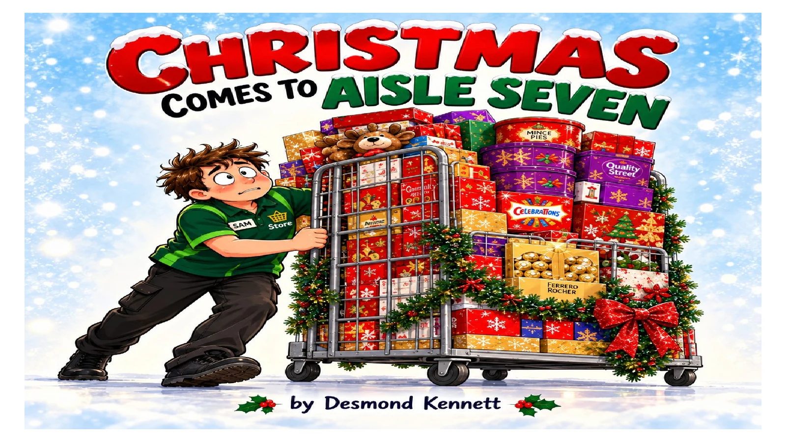

I made this storybook and realised I was a bit late to the party to get it published before Christmas. I hope to have it completely finished and ready to go next year.
Visit my DesK Apps website to see what else I’ve been up to. I’m looking for people to try my apps on their own devices. If you’d like to help, please register as a tester.